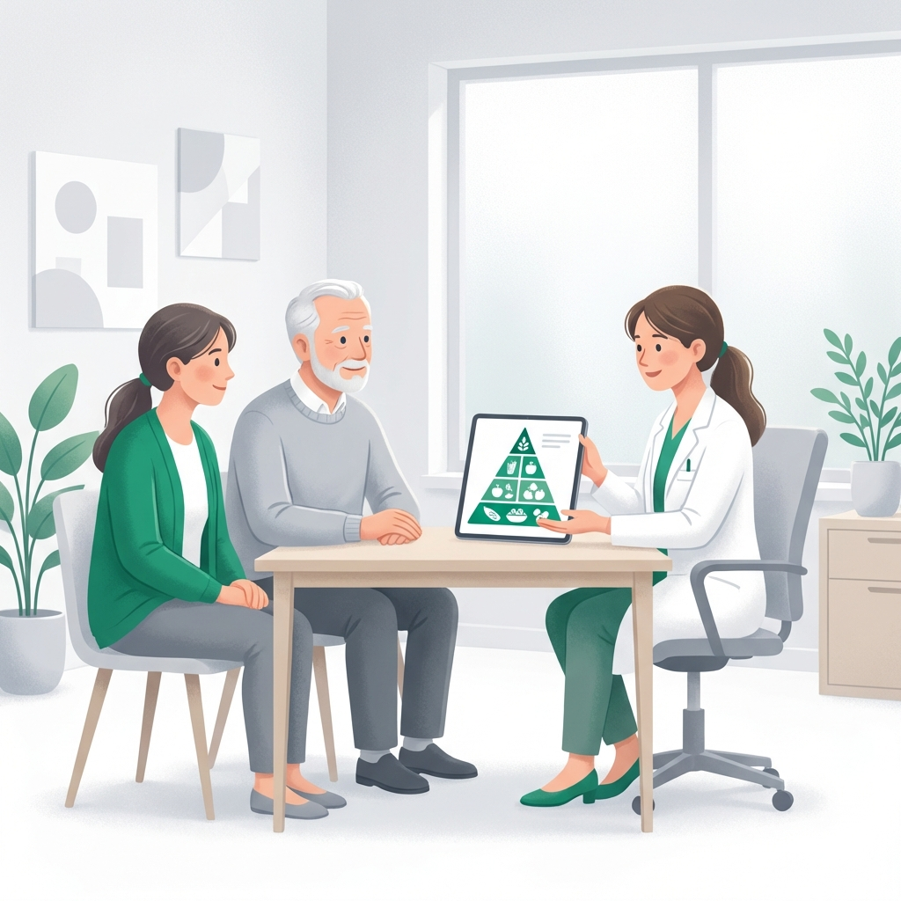

Nutrición Especializada para la Enfermedad de Parkinson
Optimización nutricional para mejorar la eficacia del tratamiento dopaminérgico y gestionar complicaciones digestivas con rigor clínico.

El Parkinson es mucho más que un temblor visible. Es una condición que afecta el sistema digestivo desde etapas muy tempranas, impactando la absorción de medicamentos y la calidad de vida diaria.
En Clínica Denki, implementamos estrategias de sincronización proteína-levodopa y protocolos de salud intestinal diseñados para que tu tratamiento médico funcione mejor y te sientas con más energía.
Manejo Especializado de Complicaciones
Atención directa a los síntomas no motores que afectan tu nutrición.
Interacción Proteica
Distribución horaria estratégica de proteínas para evitar que compitan con la levodopa.
Estreñimiento Severo
Protocolos de hidratación y fibra gradual para tratar la afectación del sistema nervioso entérico.
Disfagia (Deglución)
Coordinación de texturas seguras para evitar riesgos de aspiración o neumonías.
Control de Peso
Planes de alta densidad calórica para compensar el gasto extra por temblores o rigidez.
Nutrición Funcional en cada Etapa
Adaptamos el plan según tu estado motor y tus necesidades de medicación.
Herramientas de Apoyo
Información práctica para optimizar tu día a día.
Disfagia en Parkinson
Soluciones cuando aparecen dificultades para tragar líquidos o sólidos.
Ver SolucionesPreguntas de Pacientes
¿Debo eliminar la carne o el huevo?
No, las proteínas son esenciales. Solo las distribuimos para que no interfieran con tus tomas de medicamento dopaminérgico.
¿Por qué las náuseas son tan comunes?
Suelen ser un efecto secundario de la levodopa. Tenemos estrategias dietéticas para que toleres mejor tu tratamiento.
¿Ofrecen consulta en el domicilio?
Sí. Sabemos que la movilidad puede ser un reto importante, por lo que podemos evaluarte en la comodidad de tu hogar.
Redescubre tu Bienestar en Movimiento
Accede a un plan que optimiza tu tratamiento médico y mejora tu salud digestiva.
Atención en Clínica, a Domicilio y Online